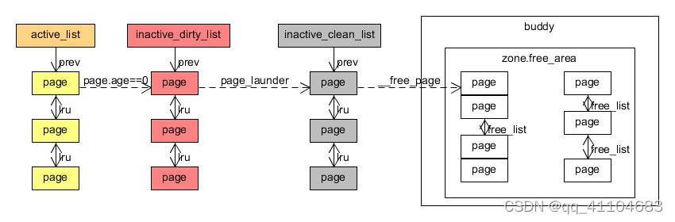
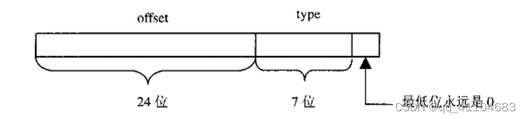

内存换出和缓冲区释放
与linux0.11将普通内存和缓冲区分成不同的物理内存来处理不同，linux2.4.0将这两者抽象成统一的内存管理接口。而在阅读linux2.4.0源码的过程中，发现内存的换出和缓冲区的释放在结构上似乎具有很强的相似性，具体体现在以下几点：
- 内存换出时，要考虑到内存是不是最近有被使用（LRU Last Recent Used）。而缓冲区也不会在进程释放完就马上释放，会停留在内存一段时间（因为从硬盘读数据到内存会影响到OS的效率）,也需要通过LRU去将缓冲区释放
- 内存换出是将暂时不用的内存写入到交换盘，待以后需要用到时通过do_page_fault换入到内存中；而缓冲区也需要将进程写入到内存的数据存储到硬盘中
Page 的LRU管理
关于page的LRU管理，有三个链表：active_list 、inactive_dirty_list、inactive_clean_list（与前两者全局的链表不同，这个在zone的管理结构中，因为这个已经向硬盘写入，但是没有回收而已）。
Page一般在使用的时候是存在于active_list；如果普通内存或者缓冲区因为长时间没使用（识别长时间没使用的方法--page老化），会将page从active_list移至inactive_dirty_list；在内存缺少的时候，当前进程或者一些周期性线程（例如kswapd）将page洗净（page_launder），将page从inactive_dirty_list移至inactive_clean_list；最后kreclaimd线程会将page从inactive_clean_list中移除（之前能从hash表中查到，之后就再也查不到page的数据了），释放至buddy系统中，供其他的进程内存分配使用。 
Page的老化
Page的老化是LRU算法的基础，在linux2.4.0中，函数refill_inactive会查看page是否有受到访问，如果受到了访问，age_page_up_nolock；如果没有受到，就age_page_down_ageonly。直到page.age为0时，会deactivate_page_nolock，将page从active_list移至inactive_dirty_list。
refill_inactive-->refill_inactive_scan
refill_inactive_scan
{
....
//缓冲区的递增在这里做，普通内存的递增在swap_out（2.4.16将两者都抽象到Referenced）
//但是递减，普通内存和缓冲区都在这做
if (PageTestandClearReferenced(page)) {
age_page_up_nolock(page);
page_active = 1;
} else {
age_page_down_ageonly(page);
....
}
普通内存的老化
查看普通内存是否受到访问，需要借助硬件机制。在MMU中，将page映射到虚拟内存，每次通过虚拟地址访问，都会通过pgd-->pmd-->pte去访问page。在MMU访问这些pgd/pmd/pte时，都会将_PAGE_ACCESSED置上，再通过ptep_test_and_clear_young来检查page是否受到访问。
swap_out会通过链表init_mm.mmlist.next来遍历所有进程的mm_struct结构体中的所有vma，从而确保遍历进程申请的所有虚拟地址，来检查page是否受到了访问，如下图try_to_swap_out。
注：这样遍历似乎在效率上存在很大的问题，例如vma申请了，但是没有映射内存；还比如说page被映射到了MMU中，但是因为效率的原因不允许被换出。出现了这些情况，linux2.4.0似乎还是一如既往的遍历了所有的vma。所以后期似乎对这一块有所优化，将page映射的pte通过红黑树放在page的管理结构中，这样就可以通过page去查看pte是否被访问，或者将pte对应的page移至其他内存上，从而减少内存碎片，具体参考 深入剖析Linux内核反向映射机制
refill_inactive-->swap_out-->swap_out_mm-->swap_out_vma-->swap_out_pgd-->swap_out_pmd-->try_to_swap_out
try_to_swap_out
{
...
onlist = PageActive(page);
/* Don't look at this pte if it's been accessed recently. */
//普通内存受到访问age递增
if (ptep_test_and_clear_young(page_table)) {
age_page_up(page);
goto out_failed;
}
//如果之前不再active_list中，refill_inactive_scan就不会将age递减。所以需要在这里递减
//据《linux内核源代码情景分析》第125页说：在do_swap_page的时候，page不会立即添加到active_list，而是在page_launder时在做，从看代码可知：如果是从hash中获取page，则会在active_list中，但是如果要从盘上读取，需要经过add_to_swap_cache，这里有可能将其添加到inactive_dirty_list。
if (!onlist)
/* The page is still mapped, so it can't be freeable... */
age_page_down_ageonly(page);
...
}
缓冲区的老化
缓冲区的老化，从目前看的代码主要有三种情形：
- 通过sys_write/sys_read 初次读写buffer时
do_generic_file_read-->__add_to_page_cache-->lru_cache_add
generic_file_write-->__grab_cache_page-->add_to_page_cache_unique-->__add_to_page_cache-->lru_cache_add
do_generic_file_read-->__add_to_page_cache-->lru_cache_add
generic_file_write-->__grab_cache_page-->add_to_page_cache_unique-->__add_to_page_cache-->lru_cache_add
lru_cache_add
{
...
add_page_to_active_list(page);
//这里作者说age为0的情况很少产生，估计是因为内存是脏的
/* This should be relatively rare */
if (!page->age)
deactivate_page_nolock(page);
...
}
- 通过sys_write/sys_read 再次读写buffer时
do_generic_file_read-->__find_page_nolock-->age_page_up
generic_file_write-->__grab_cache_page-->__find_lock_page-->__find_page_nolock-->age_page_up
age_page_up
{
if (!page->age)
activate_page(page);
/* The actual page aging bit */
page->age += PAGE_AGE_ADV;
if (page->age > PAGE_AGE_MAX)
page->age = PAGE_AGE_MAX;
}
- 通过block号读写缓冲区时：
getblk-->touch_buffer
//设置标志位，然后在refill_inactive_scan中递增age
#define touch_buffer(bh) SetPageReferenced(bh->b_page)
前两种方式主要是VFS在用，第三种方式主要是具体的文件系统(例如 ext2)用。
Active_list-->inactive_dirty_list
当age在refill_inactive_scan中减到0之后，page就彻底老化，需要将其和硬盘关联。所以linux对下面变量做了抽象：
page.index：page在盘（或者inode）内的页面偏移
address_space：page到盘（或者inode）的映射，在这个结构体中记录了页面是否clean/dirty/locked，并且有将页面写入/读出的方法。另外；对于普通内存来说是swapper_space，对于ext2缓冲区是inode.i_mapping(实体是inode.i_data,操作方法是ext2_aops)。
普通内存
普通内存在refill_inactive_scan（或者try_to_swap_out）中将page.age递减置0，会在try_to_swap_out将pte和page的映射断开，之后如果进程需要通过MMU访问内存，需要通过do_page_fault，然后在hash表中查找重新建立映射了。
refill_inactive-->swap_out-->swap_out_mm-->swap_out_vma-->swap_out_pgd-->swap_out_pmd-->try_to_swap_out
try_to_swap_out
{
...
//这里pte被写0，所有后面!pte_dirty(pte)跳到drop_pte时是0
pte = ptep_get_and_clear(page_table);
flush_tlb_page(vma, address);
//初次进来，这个标志没置
if (PageSwapCache(page)) {
entry.val = page->index;
if (pte_dirty(pte))
set_page_dirty(page);
set_swap_pte:
swap_duplicate(entry);
set_pte(page_table, swp_entry_to_pte(entry));
drop_pte:
UnlockPage(page);
mm->rss--;
//将page放入到inactive_ditry_list
deactivate_page(page);
page_cache_release(page);
out_failed:
return 0;
}
...
//虚拟内存和物理内存映射一般是在do_page_fault中建立，出现写时复制或者swap时，如果vma有write_access，会pte_mkdirty。
//有两种情况没dirty：1.这个pte没被写过，被映射到零页，直接释放pte，在do_page_fault时在重新申请0页
2.如果这个页面是通过mmap，可以通过do_page_fault从硬盘中读取（另外pipe不是这种情况，因为pipe是通过file--inode的机制去访问page而不是MMU）
if (!pte_dirty(pte))
goto drop_pte;
/*
* Ok, it's really dirty. That means that
* we should either create a new swap cache
* entry for it, or we should write it back
* to its own backing store.
*/
//通过mmap建立映射，set_page_dirty将page加入到address_space的脏队列中，之后通过同步写入因硬盘
if (page->mapping) {
set_page_dirty(page);
goto drop_pte;
}
/*
* This is a dirty, swappable page. First of all,
* get a suitable swap entry for it, and make sure
* we have the swap cache set up to associate the
* page with that swap entry.
*/
//这里是MMU首次老化的内存
entry = get_swap_page();
if (!entry.val)
goto out_unlock_restore; /* No swap space left */
/* Add it to the swap cache and mark it dirty */
//将page和swap_space映射，将其加入其脏队列中，并添加置address_space和page.index组成的hash表中。
//然后将pte设置成交换盘的索引，以便do_page_fault时能从hash表或者硬盘中读入
add_to_swap_cache(page, entry);
set_page_dirty(page);
goto set_swap_pte;
...
}
try_to_swap_out将如下的结构写入到pte中，因为present位是0，所以之后再访问该page的时候，会产生页面中断，执行do_page_fault，然后去hash表或者从交换盘中读取page到内存中。
注：swap具体函数清参考get_swap_page和swap_free。这里记录一些变量含义：
- type表示交换盘的编号；
- offset表示page在交换盘中的偏移；
- swap_info[type].swap_map[offset]表示盘上页面的计数；
- swap_list.head指向的是按照prior排列的swap_file链表，
- swap_info[type].next指向这个链表的下一个，
- swap_list.next指向下一个分配时应该选择的swap_file。 
普通内存
缓冲区在refill_inactive_scan中将page.age递减置0的时候，会立即将其放入inactive_dirty_list
refill_inactive-->refill_inactive_scan
refill_inactive_scan
{
if (PageTestandClearReferenced(page)) {
age_page_up_nolock(page);
page_active = 1;
} else {
age_page_down_ageonly(page);
//在alloc_page中的rmqueue中，从buddy系统中获取page时，已经将page.count置1,如果只有单个进程MMU的引用或者只有buffer_head的引用，page.count为2；如果是单个进程mmap，那么这个page既被映射到MMU中，又被加载到bh中，所以page.count为3.
//这里只是单独处理缓冲区的部分，处理MMU引用在try_to_swap_out。所以如果存在page->buffers，说明其被bh引用，page.count最大是2，才能释放到inactive_dirty_list。
if (page->age == 0 && page_count(page) <=
(page->buffers ? 2 : 1)) {
//将page加入到inactive_dirty_list中
deactivate_page_nolock(page);
page_active = 0;
} else {
page_active = 1;
}
....
}
Inactive_dirty_list-->inactive_clean_list
active_list-->inactive_dirty_list,主要涉及到函数refill_inactive，以及其调用的两个函数refill_inactive_scan和swap_out，其主要是用来识别哪些page是进程长期不使用的，可以将这些page腾出来，在内存短缺的时候供其他进程使用。
所以当内存短缺的时候，需要执行page_launder，将Inactive_dirty_list中不干净的页面洗净（同步到盘上），将其转入inactive_clean_list，待进一步的回收。
普通内存
普通内存在try_to_swap_out因为pte_dirty已经set_page_dirty，所以在page_launder会检查page这个标志位是否置上，如果置上再将其写入到盘上
page_launder
{
...
//遍历整个inactive_dirty_listlist，注意这里如果不移到其他管理链表中，还在inactive_dirty_list中时，会将其插入到最后
maxscan = nr_inactive_dirty_pages;
while ((page_lru = inactive_dirty_list.prev) != &inactive_dirty_list &&
maxscan-- > 0) {
page = list_entry(page_lru, struct page, lru);
...
if (PageDirty(page)) {
int (*writepage)(struct page *) = page->mapping->a_ops->writepage;
int result;
if (!writepage)
goto page_active;
//在第二次进来的时候再向盘上写
/* First time through? Move it to the back of the list */
if (!launder_loop) {
list_del(page_lru);
list_add(page_lru, &inactive_dirty_list);
UnlockPage(page);
continue;
}
/* OK, do a physical asynchronous write to swap. */
ClearPageDirty(page);
page_cache_get(page);
spin_unlock(&pagemap_lru_lock);
//page->mapping->a_ops->writepage,如果是交换盘是swap_writepage，如果是mmap，则是ext2_writepage
result = writepage(page);
page_cache_release(page);
/* And re-start the thing.. */
spin_lock(&pagemap_lru_lock);
//写完，在这里退出此次page的操作
if (result != 1)
continue;
/* writepage refused to do anything */
set_page_dirty(page);
goto page_active;
}
...
else if (page->mapping && !PageDirty(page)) {
/*
* If a page had an extra reference in
* deactivate_page(), we will find it here.
* Now the page is really freeable, so we
* move it to the inactive_clean list.
*/
//从inactive_dirty_list移到inactive_clean_list
del_page_from_inactive_dirty_list(page);
add_page_to_inactive_clean_list(page);
UnlockPage(page);
cleaned_pages++;
}
...
}
swap_writepage-->rw_swap_page-->rw_swap_page_base
rw_swap_page_base
{
...
//从swap_info中获取要写的设备（dev）或者inode(swapf)
get_swaphandle_info(entry, &offset, &dev, &swapf);
//获取底层的参数dev block（物理）
if (dev) {
zones[0] = offset;
zones_used = 1;
block_size = PAGE_SIZE;
} else if (swapf) {
int i, j;
unsigned int block = offset
<< (PAGE_SHIFT - swapf->i_sb->s_blocksize_bits);
block_size = swapf->i_sb->s_blocksize;
for (i=0, j=0; j< PAGE_SIZE ; i++, j += block_size)
if (!(zones[i] = bmap(swapf,block++))) {
printk("rw_swap_page: bad swap file\n");
return 0;
}
zones_used = i;
dev = swapf->i_dev;
}
...
//在其中提交申请submit_bh
brw_page(rw, page, dev, zones, block_size);
..
}
缓存
缓存不像普通内存换出那样在页面短缺的时候才同步，会周期性的（或者在balance_dirty发现dirty的bh过多时）通过bdflush去flush_dirty_buffers，以防止脏缓存的集中性写入。
balance_dirty-->wakeup_bdflush-->flush_dirty_buffers
bdflush-->flush_dirty_buffers
flush_dirty_buffers
{
...
bh = lru_list[BUF_DIRTY];
...
for (i = nr_buffers_type[BUF_DIRTY]; i-- > 0; bh = next) {
next = bh->b_next_free;
...
//提交申请submit_bh，写缓存
ll_rw_block(WRITE, 1, &bh);
...
}
...
}
另外因为内存短缺而执行page_launder，会将这些干净页面放入到inactive_clean_list中，如果遇到页面短缺程度比较大，也会在try_to_free_buffers中将一些老化但是没同步的内存同步到盘上，然后释放至inactive_clean_list。
page_launder
{
...
//遍历整个inactive_dirty_listlist，注意这里如果不移到其他管理链表中，还在inactive_dirty_list中时，会将其插入到最后
maxscan = nr_inactive_dirty_pages;
while ((page_lru = inactive_dirty_list.prev) != &inactive_dirty_list &&
maxscan-- > 0) {
page = list_entry(page_lru, struct page, lru);
...
if (page->buffers) {
...
//从inactive_dirty_list移除
del_page_from_inactive_dirty_list(page);
...
//释放bh，如果短缺（wait）严重会同步缓存
/* Try to free the page buffers. */
clearedbuf = try_to_free_buffers(page, wait);
...
if (!clearedbuf) {
...
else/* page->mapping && page_count(page) == 2 */ {
//添加至inactive_clean_list
add_page_to_inactive_clean_list(page);
cleaned_pages++;
}
...
}
}
try_to_free_buffers
{
...
do {
struct buffer_head *p = tmp;
tmp = tmp->b_this_page;
//检查是否写到盘上
if (buffer_busy(p))
goto busy_buffer_page;
} while (tmp != bh);
...
//释放page对应的bh至unused_list，如果有足够的bh，则将其释放至slab
if (p->b_dev != B_FREE) {
remove_inode_queue(p);
__remove_from_queues(p);
} else
__remove_from_free_list(p, index);
__put_unused_buffer_head(p);
//将bh对page的引用计数释放
page->buffers = NULL;
page_cache_release(page);
...
busy_buffer_page:
if (wait) {
//向盘上同步
sync_page_buffers(bh, wait);
/* We waited synchronously, so we can free the buffers. */
if (wait > 1 && !loop) {
loop = 1;
goto cleaned_buffers_try_again;
}
}
return 0;
}
注：bh和page是两套系统：
- bh在使用时，存放在lru_list中
- free_list主要是用于一些磁盘的管理结构，例如super，inode.i_block等，这些结构都是内核使用的，不需要通过page去访问。因为这个page所对应的多个block可能是不同设备中的不连续的block。
- unused_list相比于free_list，更偏重于进程的访问（sys_read/sys_write）,一个page和inode中连续的block是相对应的，page.index指的是page在inode中的逻辑偏移。但是在free_list的bh不足时，会向unused_list申请bh。
- 在内核释放一些不需要的bh时，是通过brelse释放，存放在lru_list中；
如果内核在执行过程中出问题，需要将之前依赖的一些bh释放时，会使用bforget接口，将其释放至freelist，但是还能通过hash（dev,block）找到bh;
但是可能因为一些特殊情况（例如set_blocksize改变文件系统的逻辑块大小），会将brelse彻底释放的bh放到free_list中（因为blocksize已经改变，要重新将其分配）。因为bh已无效，hash（dev，block）是断开的；
如果要将bh释放给slab，需要通过__put_unused_buffer_head（一般是进程出错自己释放，或者由try_to_free_buffers释放page的时候一起释放
5.总结
是否在hash中 是否指向实际内存（page） lru_list 在 有内存 free_list 在（小概率不在） 有内存 unused_list 不在 没内存
Inactive_clean_list-->buddy系统
这主要是将page彻底回收（与address_space断开），然后通过free_page释放给buddy系统。
kreclaimd
{
...
//将page从address_space断开，并且将hash移除
page = reclaim_page(zone);
...
//释放给buddy
__free_page(page);
...
}
reclaim_page
{
...
maxscan = zone->inactive_clean_pages;
while ((page_lru = zone->inactive_clean_list.prev) !=
&zone->inactive_clean_list && maxscan--) {
page = list_entry(page_lru, struct page, lru);
...
//这两个分别从swapper_space，和inode.i_mapping中移除，解除hash。
/* OK, remove the page from the caches. */
if (PageSwapCache(page)) {
__delete_from_swap_cache(page);
goto found_page;
}
if (page->mapping) {
__remove_inode_page(page);
goto found_page;
}
...
}
...
found_page:
//从inactive_clean_list中移除
del_page_from_inactive_clean_list(page);
...
}
总结
普通内存换出：
在refill_inactive函数中分别通过try_to_swap_out检查是否受到访问，并在refill_inactive_scan将其老化。如果长时间没受到访问，refill_inactive会在try_to_swap_out后面将其和pte解除映射，存放至inactive_dirty_list。
在内存短缺的时候，会通过page_launder将内存写到盘上，并添加至inactive_clean_list。
如果该zone的free_page较少，会通过kreclaimd将其释放给buddy
注：当page释放给inactive_dirty_list时，因为已经和pte断开，所以在此访问时只能通过do_page_fault中的do_swap_page将page换入。如果此时page还没释放给buddy，可以在hash中查找；如果已经完全释放，则需要通过read_swap_cache（最后调用rw_swap_page_base读）将page从盘上读进来
缓冲区的释放：
- 进程会通过sys_read/sys_write（内核会通过getblk）增加page.age，并且在refill_inactive中的refill_inactive_scan将其老化；如果彻底老化，refill_inactive_scan后续会将其移至inactive_dirty_list
- 平时会有bdflush（或者在balance_dirty发现dirty的bh过多时）去flush_dirty_buffers，将缓冲区同步，当内存短缺时，会通过page_launder将其移至inactive_clean_list（如果特别短缺，page_launder也会在try_to_free_buffers中做脏缓存的同步）
- 如果该zone的free_page较少，会通过kreclaimd将其释放给buddy，之后要读只能再次从盘上读取。
参考书籍
- 《Linux内核源代码情景分析》